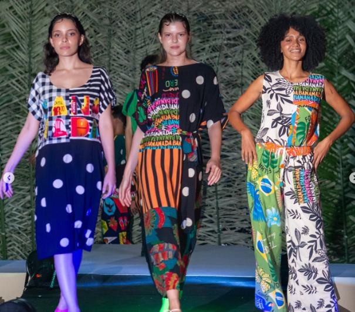
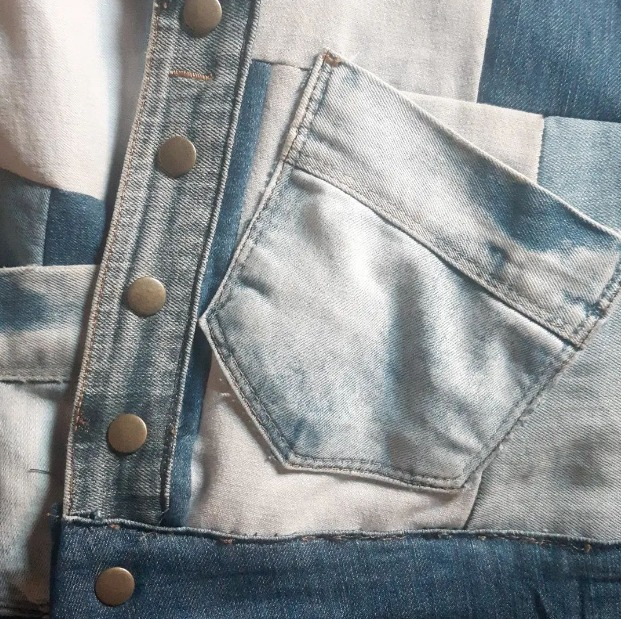
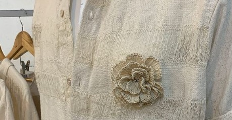
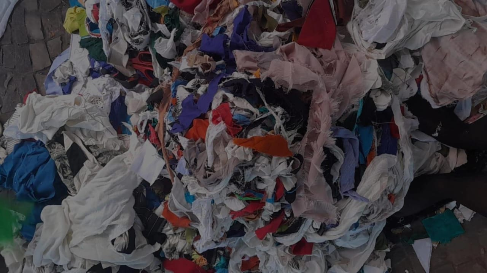
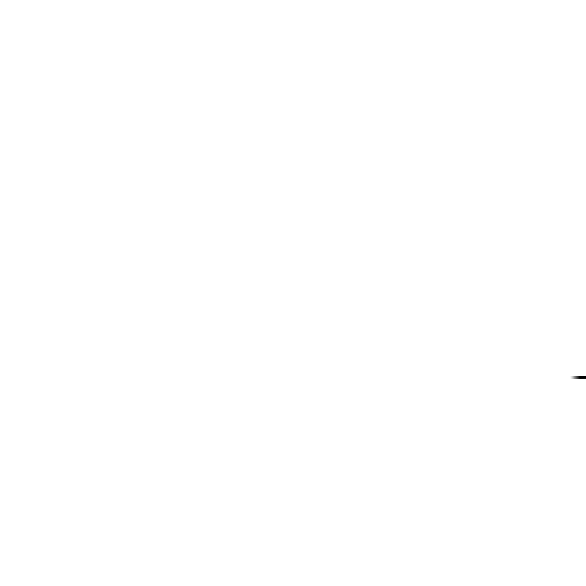
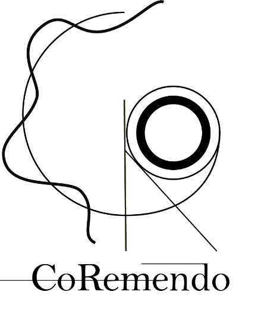
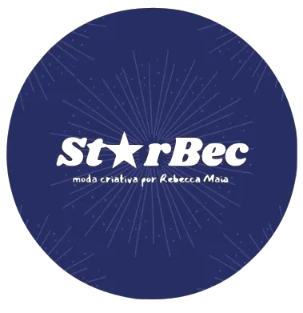
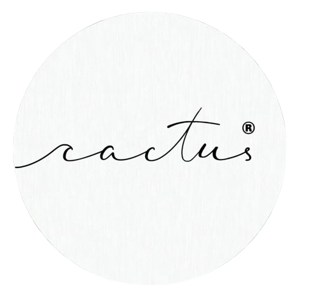

Negocie seu resíduo e lucre com seu estoque parado
Conectamos confecções locais a designers e marcas de reaproveitamento. Reduza custos de armazenamento, evite multas ambientais e promova a circularidade têxtil de forma simples e rentável.





Nossa Jornada pela Moda Sustentável
Sobre Nós
O projeto GERARE surgiu da necessidade de manusear resíduos das confecções locais teresinenses com a responsabilidade de remanejar o que não seria aproveitado. Facilitamos a destinação de retalhos pré-consumo (sobras de corte) de forma a liberar espaço útil no chão de fábrica e evitar multas ambientais.
Estimulamos a troca de experiências, estimulando negociações justas para intercambiar resíduos entre empresas geradoras e ateliês criativos, adequando os processos às propostas de desenvolvimento sustentável de cada negócio.
Nosso Objetivo
Guiar empresas em direção ao estado de sustentabilidade plena, equilibrando de forma inteligente os pilares econômico, ecológico e social da nossa comunidade local. Fomentamos o engajamento social fortalecendo microempresas regionais.
Nossa Missão
Alcançar a circularidade na indústria da moda piauiense através da gestão correta, rastreável e lucrativa de resíduos têxteis, transformando o que antes era desperdício em matéria-prima de alto valor criativo.
Como Funciona a Conexão Circular?
Cadastre suas Sobras
Indique os materiais acumulados em sua fábrica (algodão, jeans, malhas) e a quantidade aproximada em nosso formulário.
Conectamos os Parceiros
Nossa rede cruza as informações e notifica ateliês locais de reaproveitamento e patchwork que necessitam desses tipos específicos de retalhos.
Parceria Facilitada
Geradoras e ateliês parceiros fecham a destinação com segurança e logística inteligente, promovendo economia circular de forma prática.
Novo Ciclo de Vida
Os retalhos são retrabalhados artesanalmente pelas marcas parceiras, dando origem a coleções exclusivas e ecologicamente corretas.
Simule o Impacto do seu Resíduo
Entenda quanto você economiza em recursos e o impacto positivo ao dar o destino correto às suas sobras de tecidos.
Dados de Entrada
2.875.000
Litros de Água Preservados
Equivale ao consumo de água de uma pessoa por mais de 25 anos.950
kg de CO2 Evitados
Menos gases de efeito estufa emitidos no ar e aterros.3,75
m³ de Espaço de Estoque Liberado
Espaço livre recuperado no seu galpão ou chão de fábrica.800
Peças Recriadas Potenciais
Novos artigos confeccionados a partir de retalhos reutilizados.* Cálculos baseados em estimativas médias de pegada hídrica e emissões de carbono para produção e descarte de fibras têxteis (Fontes: Water Footprint Network & Relatórios de Análise de Ciclo de Vida do Setor Têxtil).
Conexões Locais em Teresina
Nosso ecossistema conecta as confecções industriais aos polos artesanais, reduzindo custos de transporte e emissões.
Navegue pelo Ecossistema
Clique em qualquer ponto do mapa (círculos laranjas para indústrias e quadrados amarelos para ateliês criativos) para ver os detalhes da conexão, fluxos de resíduos têxteis e a quilometragem média do transporte.
Polo Têxtil Centro
Zona concentrada de confecção sob medida, pequenos alfaiates e lojas de tecidos. Gera principalmente retalhos de algodão, viscose e linho fino.
- Principais Destinações: Ateliê CorRemendo (distância: 4.2 km)
- Status: 8 parceiros ativos cadastrados
Polo Industrial Zona Sul
Grandes galpões e fábricas focadas em confecções casuais e fardamento. Alto descarte de retalhos de malha mista e poliéster.
- Principais Destinações: Ateliê Starbec e Casa Cactus
- Status: 3 grandes fábricas conectadas
Polo Têxtil Dirceu
Forte hub de produção de Jeans (Denim) e moda jovem. Resíduos com alta durabilidade com excelente potencial para patchwork estruturado.
- Principais Destinações: Ateliê Starbec (distância: 5.8 km)
- Status: 6 confecções conectadas
Ateliê CorRemendo
Laboratório criativo focado no redesign têxtil e customização artesanal sob a assinatura de Madu Melo.
- Principais criações: Jaquetas estruturadas, coletes e acessórios exclusivos de linho e algodão.
- Polo mais próximo: Polo Centro
Marca Starbec
Assinada por Rebecca Maia, a marca destaca-se na moda criativa através de peças focadas em patchwork e recomposição de retalhos.
- Principais criações: Casacos patchwork pesados, saias estruturadas e calças jeans reformuladas.
- Polo mais próximo: Polo Dirceu
Casa Cactus
Coletivo e espaço físico que se integra ao ecossistema para comercializar e exibir produtos sustentáveis e promover workshops locais.
- Principais criações: Almofadas artesanais, tapetes rústicos e bolsas utilitárias.
- Polo mais próximo: Polo Zona Sul
Nossas Marcas Parceiras
Conheça os ateliês locais que utilizam o reaproveitamento criativo para transformar sobras de corte em coleções icônicas de moda.

CorRemendo
Assinado por: Madu Melo
A CorRemendo é uma marca e laboratório criativo que se destaca pelo seu compromisso com o redesign sustentável. Com uma estética alternativa e design exclusivo resultam em peças únicas, através de um processo artesanal cuidadoso. Priorizamos a sustentabilidade em todas as etapas de produção, transformando materiais reaproveitados em criações únicas.

Starbec
Assinado por: Rebecca Maia
A marca Starbec é reconhecida por sua moda criativa e singular, especialmente por suas peças em patchwork. Utilizando trabalhos em retalho, a Starbec cria uma identidade única através de recortes e combinações de estampas. Com um forte viés sustentável, a marca se dedica a resignificar os retalhos, combinando-os com outros materiais para promover a circularidade e prolongar o ciclo de vida dos resíduos têxteis.

Casa Cactus
A Casa Cactus está vinculada ao projeto com o objetivo de se conectar com marcas que utilizam seus resíduos como matéria-prima. Esta iniciativa busca implementar uma gestão eficiente de resíduos, promovendo uma economia circular e transformando descartes em novos produtos sustentáveis. Dessa forma, a Casa Cactus se torna uma marca mais responsável e comprometida com a sustentabilidade.
Por que destinar seus resíduos?
O descarte incorreto gera prejuízos financeiros e ambientais. Veja os números que mostram a importância de se juntar ao projeto.
Problema de Logística e Espaço
Apenas 25% das empresas têm área específica para resíduos têxteis; a maioria usa o chão de fábrica ou áreas compartilhadas, o que prejudica o layout. Além disso, 75% relatam falta de espaço adequado. Vender ou doar resíduos é uma solução que libera espaço e melhora a organização. [1]
Desperdício de Matéria-Prima
Cerca de 80% dos resíduos têxteis vão para lixões e aterros, mas têm potencial de retorno ao mercado. Valorizar esses materiais reduz custos de descarte e gera receita extra ao transformá-los em novos produtos ou matéria-prima. [2]